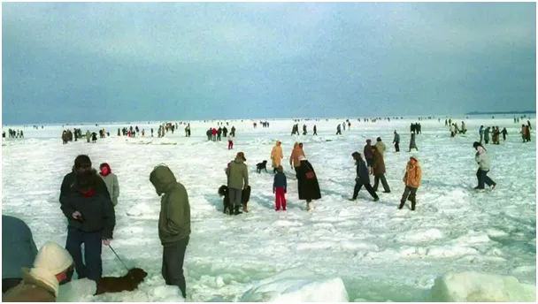
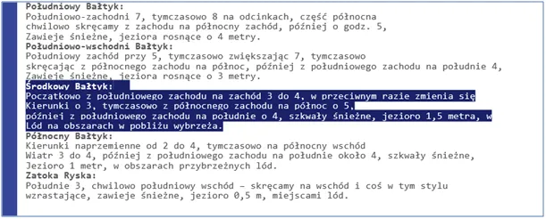
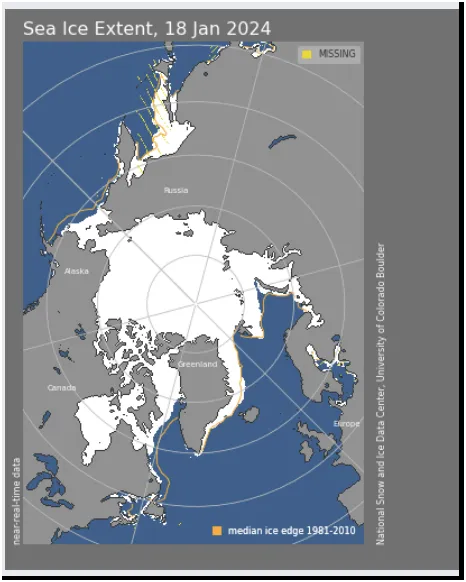
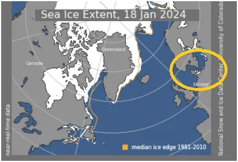

Lód na niemieckim południowym Bałtyku? Kto już widział?
Od kilku dni na mapce lodowej niepokoiły mnie białe piksele na Bałtyku u wybrzeży Dani i Niemiec. Są to najcieplejsze fragmenty akwenu z powodu bliskości Atlantyku. Mapy lodu arktycznego powstają na podstawie zdjęć satelitarnych.
Sprawdzałem to na mapie naszego IMGW i tam 15 stycznia nic nie widać. Satelity są lepszym źródłem informacji niż nasze instytuty naukowe, niestety wiem o tym od dawna. Znalazłem niemiecki instytut meteo dwd.de, który ostrzega przed lodem na Środkowym Bałtyku.

Z mapki wynika, że lód jest w okolicy Lubecki i granicy z Danią, proszę o info osoby niemieckojęzyczne, co tam się dzieje.


Po naszej stronie Zalew Wiślany skuty lodem na dobre, ale to norma. Zatoka Botnicka na południu domyka lodową zaporę i jeśli powstanie lodowy most z Finlandii do Szwecji to spowolniony przepływ wody przyspieszy zamarzanie całej zatoki.
Przez najbliższy tydzień głęboki niż przyniesie ocieplenie, ale będzie wietrznie, co wymusi większe zapotrzebowanie na ogrzewanie domów. Na zamarzniętą ziemię i drogi spadnie marznący deszcz i deszcz ze śniegiem. Na Atlantyku zaczyna się już intensywne mieszanie powietrza między południem a północą, czyli będzie dynamicznie. To skutek zwiększonej od kilku dni dynamiki przesuwania się granicy nocy polarnej i stref ciepłych na północ, o czym wczoraj pisałem tu: https://pawelklimczewski.pl/2024/01/19/sinus-i-kosinus-rzadza-wszechswiatem-a-ptasie-mozdzki-potrafia-przeliczac-te-funkcje/
Paweł Klimczewski